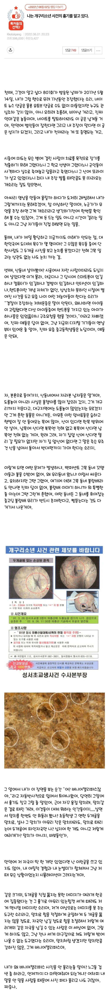
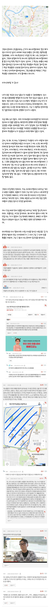
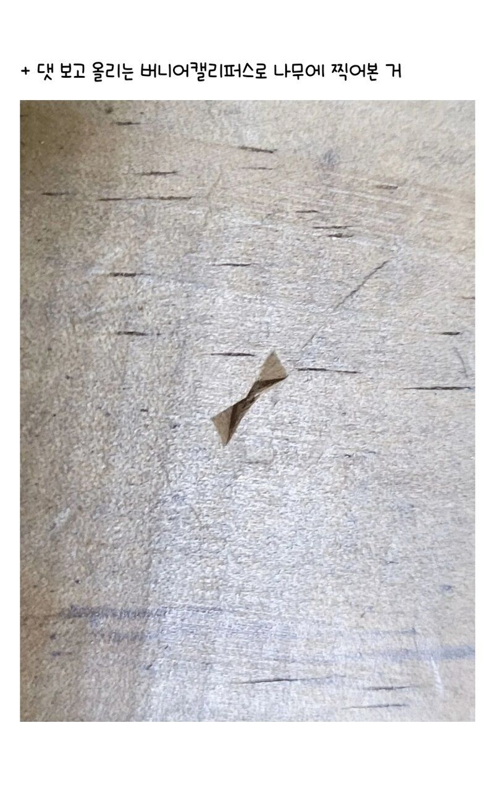
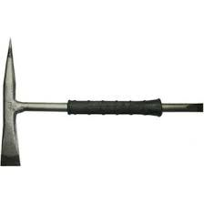

저 당시 일진이면 충분히 그럴만도 하다.
와.....
ㄹㅇ 설득력이 있습니다.
흉기는 진짜 맞는 것 같기도..
근데 뭐 또 찾아보니 관통상도 있고 저항흔도 있다고 하네요. 매장도구도 미리 준비했을 확률도 크고
전 버니어 말고 용접망치가 더 설득력 있다고 봅니다.
본드 부는 놈들이 버니어를 사서 들고다닌다? 흠.....ㅋㅋㅋㅋ
 와.. 이게 더 그럴싸한데요? 반응보니 학교에서 쓴다고 해도 일진애들이 버니어를 왜 가지고 다니냐? 이런 반응이 많더라구요. 학생이란 가설은 그럴 듯 한가요?
학생이라는 가설은 괜찮은 것 같습니다.
어른이라면 애가 저항하건 말건 용접망치로도 한방에 치명상 입혔을텐데
본드에 취해있는 애들이라면 한번에 그러질 못했을거니 충분이 가능성 있는 것 같습니다.
누가 살해했을지 진짜 궁금하긴 하네요. 화성살인사건처럼 잡혔으면 좋겠습니다
사실 쓰니가 범인이었고
끼야아아아아아아악
근데 저 사실 개구리? 그알 안봤습니다. 그래서 이 글이 보여도 안 들어가봤는데 우리 애들이 가져온거니까 친히 읽어봤는데 소름 돋네요ㄷ ㄷ 빨리 근처 고등학생들이었던 사람 범인 잡아야겠는데
이거 공소시효 예~전에 끝난 사건이라 범인 잡아도 처벌 불가능. 대한민국 3대 미제사건 중 하나임.

후원댓글 12개
댓글 12개 ▼